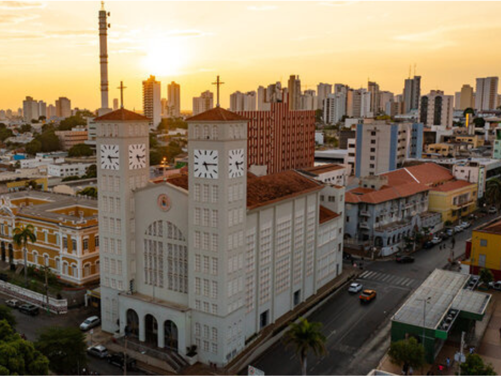

O Mato Grosso, localizado no Centro-Oeste brasileiro, é o terceiro maior estado do país. Conhecido como o "celeiro do Brasil", é a grande potência nacional do agronegócio, sendo líder absoluto na produção de soja, milho, algodão e carne bovina, além de abrigar uma biodiversidade ímpar e registrar uma das menores taxas de desemprego do território nacional.
